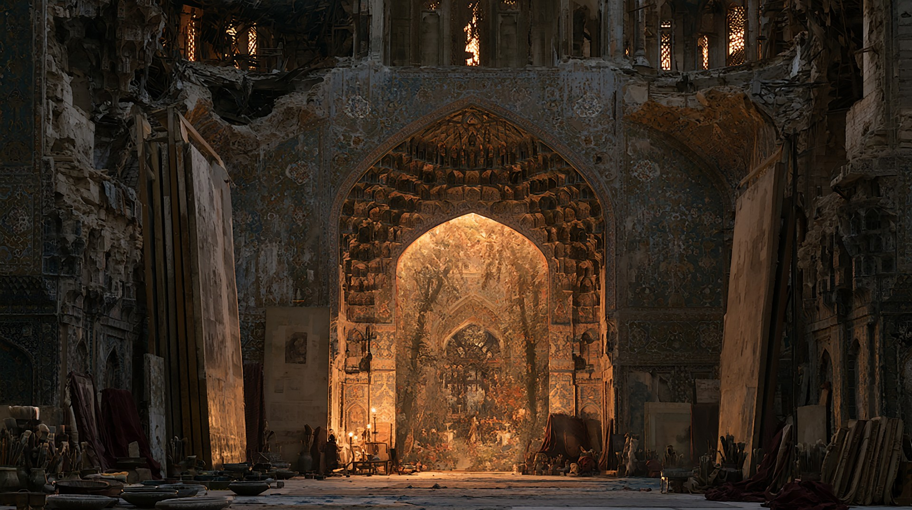
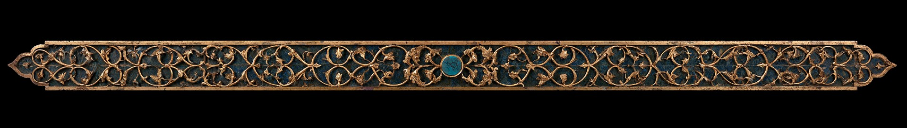
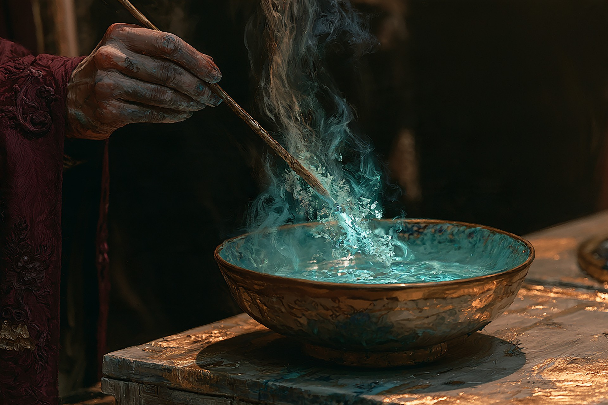

Private collection / Record 006
The Classified
Archive.
What the official portrait conveniently leaves out.
Unseal the recordThe atelier. Please leave the canvases closed.
01 / Three curious facts
A few things
worth knowing.
My maps need updating.
I once painted a shortcut through a palace. It led to another palace. I now describe the route as “scenic.”
Leo outranks me.
Small at home and enormous beyond the canvas, Leo is the only companion who can cross every painting with me. He accepts payment in treats and has never approved a travel itinerary. Meet the guardian.
The details are never finished.
I have repainted the same turquoise tile seventeen times. The kingdom is collapsing, but the colour was slightly wrong.

02 / A survival guide for working with me
Before you
join the expedition.
Working with a painter is manageable. Working with a painter whose ideas become doorways requires a few ground rules.
Archivist's note: Bring patience, a notebook, and something for Leo. His opinion carries considerable weight.
Write down the plan.
Clear written instructions help me keep track of the task, especially when I am deep in an idea.
Give honest, specific feedback.
Tell me what works and what needs changing. “The doorway is too small” is more useful than “something feels strange.”
Set a deadline before the details multiply.
Agree on the goal and the stopping point. Otherwise, one small sketch may become an entire civilisation.
Do not touch wet paintings.
Ask before entering a canvas. If Leo refuses to go first, we are taking another route.

03 / Known weaknesses
The price
of creation.
Memory is my currency.
Each life I paint into existence takes a memory in return. The smallest details disappear first: a familiar voice, a street corner, the colour of a door. My sketchbook holds what I am afraid to lose.
I struggle to leave a work unfinished.
Even without magic, I can lose track of time while refining an image. Learning when to stop is part of my journey, too.
04 / Future ambitions
Find the First Canvas.
Build what comes next.
My next quest is to recover my first painting. I believe the memories I have lost still live inside it. Finding it may mean choosing between the world I made and the person I used to be.
Outside this story, I want to keep growing as a concept artist and painter, and build digital worlds that people can explore. I want my work to carry something of where I come from, while opening a door to somewhere new.
Explore Laila and Majnun at the Met